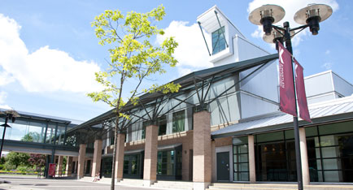
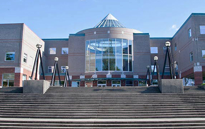

Langley Campus ↔ Richmond Campus
This route connects KPU’s Langley Campus with the Richmond Campus, offering a convenient carpooling option for students who regularly travel between these two locations.
RideShare KPU makes commuting easier, more affordable, and better for the environment.

Langley Campus

Richmond Campus
Many students travel this route every day for classes, labs, and events. Sharing rides helps reduce costs, saves time, and creates a stronger campus community.
Why Choose This Route?
- Cost Savings: Split travel costs with fellow KPU students.
- Time Efficiency: Carpool lanes and priority parking help save time.
- Community: Meet new classmates heading to the same destination.
- Eco-Friendly: Fewer cars on the road reduces your carbon footprint.
Typical Commute Info
The drive between Langley and Richmond campuses typically takes around 40–50 minutes depending on traffic. Carpooling also makes parking simpler when you arrive.
How to Get Started
- Create your free RideShare KPU account with your student email.
- Search available rides or post your own commute for Langley ↔ Richmond.
- Connect safely with verified KPU students heading the same way.
- Coordinate ride details through the platform.
- Enjoy a shared ride and start saving!
Ready to Ride Langley ↔ Richmond?
Join the RideShare KPU community today and start sharing rides!
Join Now